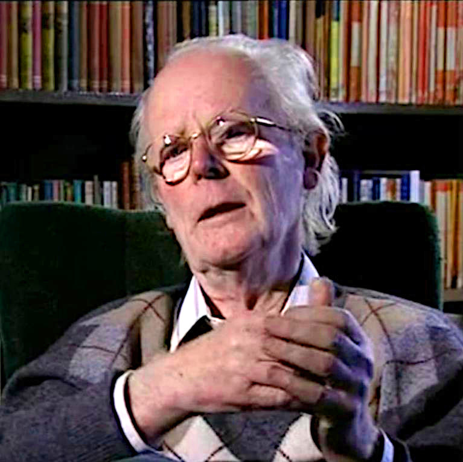
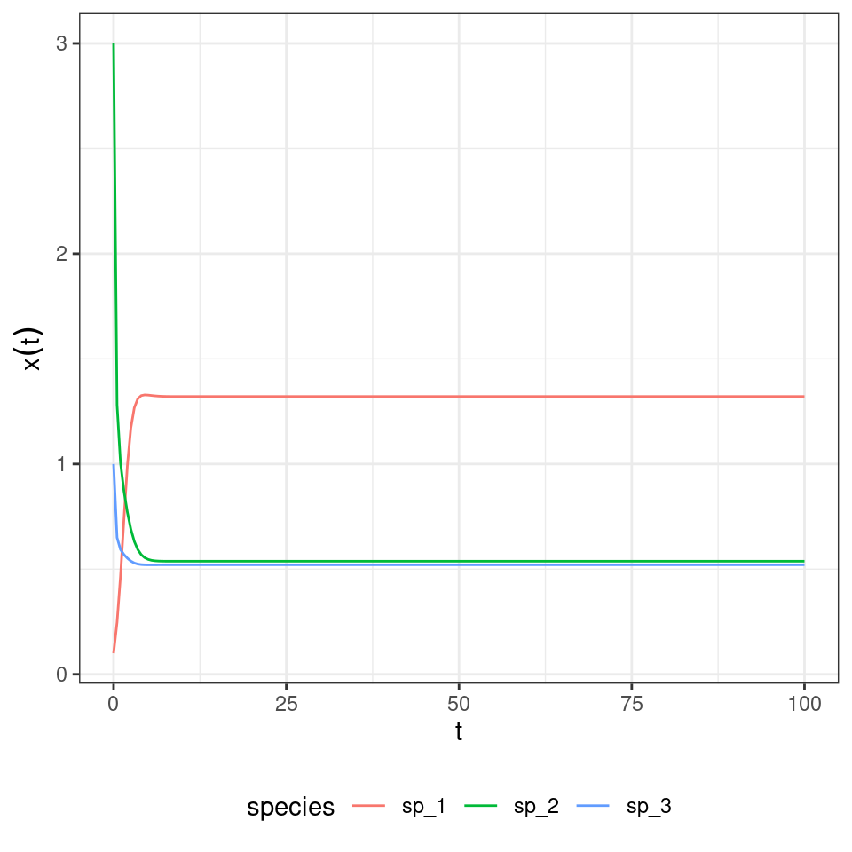
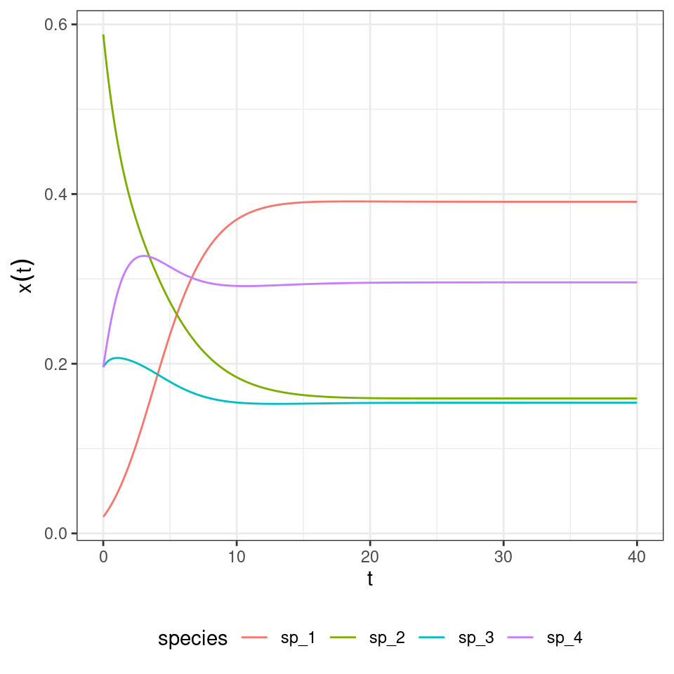

Lecture 6 Game theory and replicator dynamics
6.1 Game theory
We briefly introduce the study of game theory, the science of strategic interactions, and its relation to the GLV model.
While the origin of the discipline can be traced back to the 1700s, modern game theory started with von Neumann’s paper On the Theory of Games of Strategy, published in 1928, and with the subsequent 1944 book with Morgensten Theory of Games and Economic Behavior. John Nash’s paper (Nash 1950) introduced the notion of a Nash Equilibrium (NE), and proved that any non-cooperative game has at least one such equilibrium. Originally, game theory was studied by economists and mathematicians, but with a series of papers in the early 1970s, and the subsequent book Evolution and the Theory of Games (Maynard Smith 1982), John Maynard Smith showed how the same tools could be used to study evolutionary dynamics, introducing the influential concept of an Evolutionary Stable Strategy (ESS). Evolutionary game theory was greatly advanced through the introduction of the Replicator Equation (RE), which, as we will see later, has strong connection with the GLV model. For a detailed introduction to evolutionary game theory see Hofbauer and Sigmund (1998).
History: John Maynard Smith (1920-2004)

Born in London, when he was at Eaton he decided to study (independently) the work of JBS Haldane. He set out to Cambridge to study engineering, and subsequently worked as an engineer designing military aircrafts. In 1947, he had a change of hearth and decided to study Drosophila genetics at U.C.L. under Haldane. In 1973, based on his interaction with George Price, he formalized the concept of “Evolutionary Stable Strategy”, which became central to evolutionary game theory. His book Evolution and the Theory of Games (1982) was an immediate success and contributed to the birth of the field.
History: George R. Price (1922-1975)

One of the most remarkable characters in the history of biology, he was born in New York. He studied chemistry at U. Chicago, receiving a PhD in 1946 (for work connected to the Manhattan Project). He went on to take a variety of jobs: teaching chemistry at Harvard, consulting at Argonne, researching at Bell Lab, writing popular science, working on medical research at U. Minnesota, and consulting for IBM on computer graphics.
In 1966, he was operated for a tumor, and the operation resulted in a partial paralysis. With the money from his medical insurance, he moved to the UK to start a new life.
Without any training in population genetics or statistics, he devised the Price equation, based on his readings of Hamilton’s papers on kin selection. This feat landed him a job at Galton Lab at UCL, despite his lack of credentials. His collaborations with Hamilton and Maynard-Smith led to the development of evolutionary game theory.
A strong atheist from an early age, in 1970 Price had a religious experience, converted to Christianity and started (inspired by his own equation) to perform acts of random kindness to complete strangers. Having given up all his possessions, and possibly due to his stopping of thyroid treatment, Price grew depressed and committed suicide in 1975.
The book The Price of Altruism: George Price and the Search for the Origins of Kindness (Oren Harman, 2010) narrates the incredible story of his life.
6.2 Bimatrix games
We start by analyzing games in which two players face each other; the two players simultaneously choose a strategy out of a set. Importantly, we consider static games in which each player makes their decision without having knowledge of the decision of the other player.
Player 1 chooses a pure strategy \(s_1\) from the set of pure strategies \(S_1\), while player 2 chooses \(s_2 \in S_2\). We call \(\pi_k (s_1, s_2)\) the payoff for player \(k\) when player 1 chooses \(s_1\) and player 2 \(s_2\).
In a matrix game, we can arrange the payoffs for each player in a matrix. We call \(A\) the matrix of payoffs for player one (the row player) and \(B\) that for player two (the column player).
6.2.1 Example: the prisoner’s dilemma
Two prisoners allegedly committed a crime, but the police do not have enough evidence to convict them. They therefore approach each prisoner separately, proposing a deal: if the prisoner confesses (“defects” the other prisoner), then their sentence will be reduced. In particular: i) if both confess (both “defect”), they are sentenced to 4 years in prison; ii) if one confesses (“defects”) and the other keeps quiet (“cooperates” with the other prisoner), then the one who has confessed is let free, and the other sentenced to 5 years; iii) if both keep quiet (“cooperate”), then they are both sentenced to two years of detention for some accessory crime.
In matrix form, we have (rows for pl 1 strategy C/D; cols for pl 2 strategy):
\[ A = \begin{pmatrix} -2 & -5\\ 0 & -4 \end{pmatrix} \quad B = \begin{pmatrix} -2 & -5\\ 0 & -4 \end{pmatrix} \]
What is the best strategy player 1 can play—without knowing whether player 2 will confess or not? If player 2 were to keep quiet, player 1 should confess and be let free; if player 2 confesses, on the other hand, player 1 should also confess and get a reduced sentence. As such, each player would rationally choose to confess, thereby getting sentenced to four years in prison; note that if they could trust the other player, they could cooperate to get a much reduced sentence.
The defect/defect is called a Nash Equilibrium: no player can improve their payoff by changing only their own strategy.
One of the most interesting problems in this area is the study of the evolution of cooperation. Here is a very minimal bibliography:
Key paper: Axelrod and Hamilton (1981)
The seminal paper in this area. Interestingly, it details the outcome of a computer-based tournament in which several programs iteratively play the prisoner’s dilemma against each other.
Key paper: Clutton-Brock (2009)
An opinionated review on cooperation between non-kin in animal societies. The opening “As Darwin appreciated, cooperative behaviour—actions adapted to assist others that involve costs to the fitness of participants—poses a fundamental problem to the traditional theory of natural selection”, a succinct summary of why the evolution of cooperation is such a central problem in biology.
Key paper: Nowak and May (1992)
Nowak and May examine the case in which populations of “cooperators” and “defectors” play the prisoner’s dilemma in a spatial setting. Despite the simple setting and the deterministic nature of the simulation, they find long-term coexistence of the different populations, giving rise to amazing spatial patterns.
Key paper: Nowak and Sigmund (2005)
Cooperation can evolve via indirect reciprocity (I help you in the hope that someone will help me) when players have a “reputation” to defend.
6.2.2 Mixed strategies
Above, the player could choose one out of two strategies. A generalization of this situation is one in which players play mixed strategies, i.e., play a given strategy at random according to a set of probabilities. Call \(p_i\) the probability that player 1 plays strategy \(i\); then \(p_i \geq 0\), and \(\sum_i p_i = 1\). Similarly, \(q_i\) is the probability that player 2 plays strategy \(i\). A natural choice for the payoff of player 1 is therefore:
\[ \sum_{i=1}^m \sum_{j = 1}^n p_i q_j \pi_1 (s_i, s_j) = p^T A q \]
which amounts to the expected payoff for player 1. Similarly, we have \(q^T B^T p\) for player 2.
6.2.3 Nash Equilibria
A pair of mixed strategies \(p^\star\) and \(q^\star\) is called a Nash Equilibrium for a bimatrix game if:
\[ \begin{aligned} {p^\star}^T A {q^\star} \geq p^T A {q^\star} &\quad \text{for all } p\\ {q^\star}^T B^T {p^\star} \geq q^T B^T {p^\star} &\quad \text{for all } q \end{aligned} \]
John Nash proved that every non-cooperative game has at least one Nash Equilibrium.
6.2.4 Symmetric bimatrix games
The prisoner’s dilemma above is an example of a symmetric bimatrix game, in which the matrix of payoffs is the same for both players (\(A = B\)), and the two players have access to the same set of strategies. Nash proof extends to symmetric games: every symmetric bimatrix game has at least one symmetric Nash equilibrium when considering mixed strategies (note that here “symmetry” refers to the fact that the optimal stategy is the same for all players—the matrix \(A\) needs not to be symmetric). The condition for a Nash equilibrium becomes:
\[ {p^\star}^TA{p^\star} \geq p^TA{p^\star} \quad \text{for all } p \]
6.2.5 Evolutionary stable strategies
Consider a symmetric bimatrix game, defined by matrix \(A\), and a Nash equilibrium \(p^\star\). In the context of evolution, one might imagine that “mutants” are generated, playing a variation on \(p^\star\). A Nash equilibrium is evolutionary stable if it yields a higher payoff than nearby mutants. The concept of an Evolutionary Stable Strategy (ESS) was introduced by Maynard-Smith and Price.
We write the mutant as \(p\) and the Nash equilibrium as \(p^\star\). When the mutant arises, the population is composed mostly of the \(p^\star\); we model the state of the population as \(q = (1 -\epsilon) p^\star + \epsilon p\). The value \(0\leq \epsilon \leq 1\) determines how rare the mutant is. We want to determine whether the expected payoff for \(p\) when the population is \(q\) is lower than that of the \(p^\star\):
$$ \[\begin{aligned} p^T A q &< {p^\star}^T A q\\ p^T A ((1 -\epsilon) p^\star + \epsilon p) &< {p^\star}^T A (1 -\epsilon) p^\star + \epsilon p\\ (1 - \epsilon) p^T A p^\star + \epsilon p^T A p &< (1-\epsilon){p^\star}^T A p^\star + \epsilon {p^\star}^T A p\\ (1-\epsilon) ({p^\star}^T A p^\star-p^T A p^\star) + \epsilon ({p^\star}^T A p-p^T A p)&>0 \end{aligned}\]$$ If this inequality is met, then the mutant cannot grow when rare (i.e., invade). Note that the first term is always greater than or equal to zero when \(p^\star\) is a Nash equilibrium. Thus, for sufficiently small \(\epsilon\), as long as the first term is positive, we have evolutionary stability. However, the first term could be exactly zero (this happens when there is an alternative “best reply” to \(p^\star\)), in which case we need the second term to be positive, yielding:
For \(p \neq p^\star\), and for \(p\) such that \({p^\star}^T A p^\star = p^T A p^\star\), then
\[ \begin{aligned} {p^\star}^T A p-p^T A p &> 0\\ {p^\star}^T A p &> p^T A p \end{aligned} \] Next, we connect NE and ESS with dynamical systems.
6.3 Replicator dynamics
Consider a population composed of individuals, such that individuals of type \(i\) always play strategy \(i\). We denote \(p_i(t)\) as the frequency of individuals of type \(i\) at time \(t\). When two individuals of type \(i\) and \(j\) meet, the individual of type \(i\) receives the payoff \(A_{ij}\). Then the expected payoff for an individual of type \(i\) is:
\[ \sum_j A_{ij} p_j(t) = (Ap(t))_i \]
We then assume that the payoff is invested in reproduction, making \((Ap)_i = f_i\) the fitness of type \(i\). Because we are tracking frequencies, if a type increases in frequency, necessarily another type must decline in frequencies. A natural choice is therefore to subtract from the fitness of type \(i\) the expected fitness across all types.
\[ \sum_{i,j} A_{ij} p_i(t) p_j(t) = p^T A p = \bar{f} \]
We can write the per-capita growth rate of type \(i\) as:
\[ \dfrac{\dot{p}_i}{p_i} = f_i - \bar{f} \]
Thus obtaining the replicator equation:
\[ \dfrac{d p_i}{dt} = p_i \left( \sum_j A_{ij} p_j - \sum_{jk} p_j A_{jk} p_k \right) = p_i((Ap)_i - p^T Ap) = p_i(f_i -\bar{f}) \]
As we will see, the RE is essentially equivalent to a GLV model in which we track frequencies instead of abundances.
Importantly, we can see \(p\) as a “mixed strategy” for the symmetric game encoded in \(A\). In this context, a Nash Equilibrium for the game is an an equilibrium of the replicator equation; similarly, an Evolutionary Stable Strategy for the game is a stable equilibrium for the replicator equation. As we will see later, the converse is not true: we could have a stable equilibrium of the RE which is not an ESS.
6.3.1 Nash equilibria are equilibria of the RE
Consider an equilibrium in which all types are present: we will say that the equilibrium is in the interior of the simplex, \(p^\star \in \Delta_{\text{int}}\). The simplex is the space of \(p_i \geq 0\), such that \(\sum_j p_j =1^T p = 1\). The interior of the simplex is the set of \(p\) such that \(p_i > 0\) and \(1^T p = 1\).
\(p^\star\) is a Nash equilibrium iff:
\[ {p^\star}^T A{p^\star} \geq {p}^T A{p^\star} \quad \forall p \in \Delta \]
\(p^\star \in \Delta_{\text{int}}\) is an equilibrium of the RE if:
\[ A p^\star = ({p^\star}^T A p^\star) 1_n \]
i.e., if all types have the same fitness at \(p^\star\), we have \(f_i = (Ap^\star)_i = \bar{f}\). But then:
\[ Ap^\star = \bar{f} 1_n \]
Plugging this into the definition of Nash equilibrium, we have:
\[ \begin{aligned} {p^\star}^T A{p^\star} &\geq {p}^T A{p^\star}\\ \bar{f} {p^\star}^T 1_n &\geq \bar{f} p^T 1_n\\ \bar{f} &\geq \bar{f} \end{aligned} \]
which is true: a Nash equilibrium in the interior of the simplex is also an equilibrium point for the replicator equation.
6.3.2 ESS are globally stable equilibria of the RE
Next, we consider the definition of an ESS in the interior of the simplex:
\[ \begin{aligned} {p^\star}^T A p &\geq p^T A p\\ p^T A p - {p^\star}^T A p &\leq 0 \end{aligned} \]
together with the candidate Lyapunov function:
\[ V = -\sum_j p_j^\star \log \dfrac{p_j}{p_j^\star} \geq 0 \]
We differentiate with respect to time, obtaining:
\[ \begin{aligned} \dot{V} &= -\sum_j p_j^\star \dfrac{\dot{p}_j}{p_j}\\ &=-\sum_j p_j^\star ((Ap)_j - p^T A p)\\ &=\left(-\sum_j p_j^\star A p_j\right) + p^TAp\\ &=-{p^\star}^T A p + p^T Ap \end{aligned} \]
Showing that \(\dot{V}\) is decreasing in time if and only if \(p^\star\) is an ESS. Hence evolutionary stability implies dynamical global stability of \(p^\star\).
6.3.3 Stability of the RE with symmetric \(A\)
We examine the special case of a symmetric matrix of payoffs \(A = A^T\). In this case, the two players have exactly the same interests—this type of games is sometimes called partnership game. One might expect that, given that the two players have a shared interest, the average payoff would grow in time. This is indeed the case, and in fact the average payoff is a Lyapunov function for the system.
Take \(A = A^T\), then the average payoff \(W = p^T A p\) can only grow in time:
\[ \dot{W} = p^T A \dot{p} + \dot{p}^T A p = p^T A \dot{p} + p^T A^T \dot{p} = 2 p^T A \dot{p} \]
It is convenient to write \(f = Ap = A^T p\) (the fitness vector) and the average fitness \(p^T A p = p^T f = \bar{f}\). But then, \(\dot{p} = D(p) (f - \bar{f} 1_n)\), and
\[ \begin{aligned} \dot{W} &= 2 (p^T A D(p) (f - \bar{f} 1_n))\\ &= 2(f^T D(p) f - f^Tp \bar{f} )\\ &= 2\left(p^T D(f)f - \bar{f}^2 \right)\\ &= 2 \left(p^T f^2 - \bar{f}^2 \right)\\ &= 2 (\mathbb E[f_i^2] - \mathbb E[f_i]^2)\geq0 \end{aligned} \]
Fisher’s fundamental theorem of natural selection, which states that “The rate of increase in fitness of any organism at any time is equal to its genetic variance in fitness at that time”. What we have shown is that, for partnership games, indeed the rate of increase \(\dot{W}\) of the average fitness (\(W\)) is indeed determined by \(\mathbb E[f_i^2] - \mathbb E[f_i]^2 = \mathbb {Var}[f_i]\). Note the parallel with MacArthur’s Lyapunov function (which was in fact suggested by Kimura, who was aware of Fisher’s theorem). See Baez (2021) for a discussion of Fisher’s theorem in the context of the replicator equation.
6.3.4 Invariants
Adding a constant to each column of \(A\) does not alter the dynamics. We have \(B = A + 1_n b^T\); Then:
\[ \begin{aligned} \dot{p}_i &= p_i ((Bp)_i - p^T Bp)\\ &= p_i ((Ap)_i + b^T p - p^T A p - p^T1_n b^T p)\\ &= p_i ((Ap)_i + b^T p - p^T A p - b^T p)\\ &= p_i ((Ap)_i - p^T A p) \end{aligned} \] Showing that \(\dot{p}\) (and thus the dynamics) is unchanged.
Similarly, defining:
\[ q_i = \dfrac{w_i p_i}{\sum_j w_j p_j} \]
does not alter the dynamics: we can map the trajectories of \(p\) on those of \(q\) and vice-versa. This is called the projective transformation in Hofbauer and Sigmund (exercise 7.1.3). We have:
\[ \begin{aligned} \dot{q}_i &= \dfrac{w_i \dot{p}_i}{\sum_k w_k p_k} - \dfrac{w_i p_i}{\sum_k w_k p_k} \sum_j \dfrac{w_j \dot{p}_j}{\sum_k w_k p_j}\\ &=q_i \left((Ap)_i - p^T A p \right) - q_i \sum_j q_j \left((Ap)_j - p^T A p \right)\\ &=q_i \left((Ap)_i - p^T A p - q^T Ap + p^TAp\right)\\ &=q_i \left((Ap)_i - q^T Ap \right)\\ &=q_i \left((AD(w)^{-1}D(w)p)_i - q^T AD(w)^{-1}D(w)p \right)\\ &=(\textstyle\sum_j w_j p_j ) q_i \left((AD(w)^{-1}q)_i - q^T A D(w)^{-1}q\right)\\ &=(\textstyle\sum_j w_j p_j ) q_i \left((Bq)_i - q^T B q\right)\\ \end{aligned} \] where we have defined \(B = A D(w)^{-1}\). Finally, we rescale time by \(\sum_j w_j p_j > 0\), obtaining:
\[ \dot{q}_i = q_i ((Bq)_i - q^T B q) \]
Thus, if we have \(B = AD(w)^{-1}\), we have that the replicator equation in \(A, p\) and that in \(B, q\) are equivalent (e.g., the type of dynamics is the same, the existence/stability of equilibria is unchanged, etc.). By combining the two invariants, we find that \(B = (A + 1b^T)D(w)^{-1}\), for \(b \in \mathbb R^n\) and \(w \in \mathbb R^n_+\) yields a RE that is equivalent to that in \(A\).
Very interestingly, the notion of ESS is not closed under the second invariant: we can have a \(p^\star\) that is not an ESS, and choose \(w > 0_n\) such that \(q^\star\) is an ESS (and viceversa). I have recently written a paper exploiting this fact to extend the reach of the Lyapunov function above.
6.3.5 Rock-paper-scissor
Let’s try our hand at a simple zero-sum (i.e., \(A = -A^T\)) replicator equation. We have three populations (“rock”, “paper”, and “scissors”) with payoff matrix:
\[ A = \begin{pmatrix} 0 & -1 & 1\\ 1 & 0 & -1\\ -1 & 1 & 0 \end{pmatrix} \]
We start the population at a random initial condition, and track dynamics:

What if we start all populations at the same density?

And if they are close to \(p_i = \frac{1}{3}\) for all \(i\)?

We can try our candidate Lyapunov function to show that indeed we have neutral cycles, determined by the initial conditions.
\[ V = -\sum_i p_i^\star \log \dfrac{p_i}{p_i^\star} \]
and
\[ \begin{aligned} \dot{V} &= -{p^\star}^T A p + p^T Ap\\ &=-p^TA^Tp^\star + 0\\ &= p^T A p^\star\\ &=0 \end{aligned} \]
Showing that \(V\) is conserved through the dynamics (as in the classic Lotka-Volterra predator-prey system) and thus set by the initial conditions.
6.3.6 Equivalence with GLV
For a given \(n-\)species GLV system, there is an equivalent \((n+1)-\)dimensional replicator equation with zeros in the last row of the matrix.
Take the GLV model with \(n\) species:
\[ \dfrac{d x}{dt} = D(x)(r + A x) \]
and add a “new species” \(x_{n + 1}\) such that \(x_{n+1}(0) = 1\), and \(\dot{x}_{n+1} = 0\); define \(\tilde{x} = \{x, x_{n+1} \}\) and the matrix:
\[ \tilde{A}=\begin{pmatrix} A & r\\ 0 & 0 \end{pmatrix} \]
we then have a new \(n+1\) dimensional GLV system:
\[ \dfrac{d \tilde{x}}{dt} = D(\tilde{x}) \tilde{A} \tilde{x} \]
Now we want to move from abundances to frequencies/proportions. Note that we drop all the tilde signs for easier typing. Define:
\[ y_i = \dfrac{x_i}{\sum_j x_j} \]
Then,
\[ \begin{aligned} \dfrac{d y_i}{dt} &= \sum_k \dfrac{\partial y_i}{\partial x_k} \dfrac{d x_k}{dt}\\ &= \dfrac{1}{\sum_j x_j}\dfrac{d x_i}{dt}-\dfrac{1}{(\sum_j x_j)^2} x_i \sum_k \dfrac{d x_k}{dt}\\ &= \dfrac{1}{\sum_j x_j} x_i \sum_l A_{il}x_l - \dfrac{1}{(\sum_j x_j)^2} x_i \sum_k \left( x_k \sum_l A_{kl} x_l\right)\\ &= y_i \sum_l A_{il}x_l- y_i \sum_k \left( y_k \sum_l A_{kl} x_l\right)\\ &=(\sum_j x_j) y_i \left( \sum_l A_{il}y_l - \sum_{k,l} A_{kl} y_k y_l\right) \end{aligned} \]
Finally, you rescale time using \(\sum_j x_j\) to obtain the replicator equation. To show this is indeed the case, let’s consider the GLV system:
\[ r = \begin{pmatrix} 1\\ 2\\ 3 \end{pmatrix} \quad A= \begin{pmatrix} -1 & \frac{1}{2} & \frac{1}{10}\\ -\frac{7}{10} & -2 & 0\\ -\frac{3}{10} & 0 & -5 \end{pmatrix} \]
And compute the trajectory, when starting at \(x(0) = (1/10, 3, 1)^T\):

Now build the corresponding replicator equation. The matrix of payoffs \(\tilde{A}\) becomes:
\[ \begin{bmatrix}-1&0.5&0.1&1 \\-0.7&-2&0&2 \\-0.3&0&-5&3 \\0&0&0&0 \\\end{bmatrix} \]
Integrate the dynamics of the replicator equation:

Now let’s look at the equilibrium of the GLV model:
| time | species | density |
|---|---|---|
| 100 | sp_1 | 1.3209145 |
| 100 | sp_2 | 0.5376799 |
| 100 | sp_3 | 0.5207451 |
This is the final state of the RE:
| time | species | density |
|---|---|---|
| 40 | sp_1 | 0.3908793 |
| 40 | sp_2 | 0.1591076 |
| 40 | sp_3 | 0.1540969 |
| 40 | sp_4 | 0.2959162 |
By dividing for the value of the last “species”, we recover the equilibrium for GLV:
| time | species | density |
|---|---|---|
| 40 | sp_1 | 1.3209123 |
| 40 | sp_2 | 0.5376779 |
| 40 | sp_3 | 0.5207453 |
| 40 | sp_4 | 1.0000000 |
Not only the equilibria are the same, but also the trajectories are the same once time has been properly rescaled. Similarly, for each RE system we can always recover a matrix with zero in the last row by applying the transformations detailed above, and therefore recover the corresponding GLV. For example, take the matrix for the RPS above, and make each coefficient in the last row zero by adding the appropriate constant to each column. Then one recovers some sort of a predator-prey system:

in which the species oscillate around one.
Key paper: Page and Nowak (2002)
In this brief paper, Page and Nowak show that the replicator-mutator equation and the Price equation are two ways of tracking general evolutionary dynamics. They discuss the connections with GLV and adaptive dynamics.
6.4 Hypertournament games
The rock-paper-scissor game above is a simple case of a “hypertournament” game. Take the zero-sum payoff matrix \(A = -A^T\). Then, we have
\[ \sum_i \sum_j A_{ij} p_i p_j = 0 \]
and the RE simplifies to
\[ \dfrac{d p}{dt} = D(p) A p \]
At equilibrium, either some elements of \(p\) are zero, or
\[ A p^\star = 0 \]
meaning that if an equilibrium \(p^\star \in \Delta_\text{int}\) exists, it is an eigenvector of \(A\) corresponding to a zero eigenvalue.
6.4.0.1 Number of coexisting species
We now show how the equations above can arise when modeling ecological dynamics. Suppose that a forest is composed of a fixed number of trees. Each time a tree dies (with rate \(d = 1\) for all species), a gap in the canopy opens, and species will compete to colonize it. Let’s assume that two seeds (sampled with probability proportional to the density of the species) land in the empty patch, and that they compete to fill the gap. Call \(H_{ij}\) the probability that \(i\) wins when competing with \(j\); we have \(H_{ij} + H_{ji} = 1\). We can write the dynamics (Grilli et al. 2017) as:
\[ \begin{aligned} \dfrac{d p_i}{dt} &= p_i \left(\sum_j 2 H_{ij} p_j - 1 \right) \\ &= p_i \sum_j (2 H_{ij} p_j - p_j) \\ &= p_i \sum_j (H_{ij} p_j + (1 - H_{ji}) p_j - p_j) \\ &= p_i \sum_j (H_{ij} - H_{ji}) p_j \\ &= p_i \sum_j A_{ij} p_j \end{aligned} \]
I.e., we recover the RE for a zero-sum game. What happens if we draw \(H\) (and therefore \(A\)) at random? Allesina and Levine (2011) and Grilli et al. (2017) applied the results of Fisher and Reeves (1995) and Brandl (2017) to show that, when \(n\) species compete, the probability of observing \(k\) coexisting species/strategies is \(p(k|n) = \binom{n}{k} 2^{1-n}\) when \(k\) is odd, and \(p(k|n) = 0\) when \(k\) is even.
Importantly, to find the set of coexisting species we do not need to integrate dynamics. One can use linear programming to solve for the set of species that will coexist.
Now let’s try to count how many species survive when starting with 10:

6.4.1 Lyapunov function
In the rock-paper-scissor example above, species cycled neutrally around the unique equilibrium point. To show that this is in fact the behavior of this type of RE, we write the usual Lyapunov function. By finding a constant of motion we can show that the species will follow closed orbits, exactly as found for the rock-paper-scissors game.
Suppose \(p_{i}^\star > 0\) is the equilibrium for the system. We write:
\[ V(p) = -\sum_i p_i^\star \log \frac{p_i}{p_i^\star} . \]
Because of Gibbs’ inequality, \(V(p) \geq 0\) for any \(p\), and is equal to zero only if \(p = p^\star\). Note also that at equilibrium \(2 \sum_j H_{ij} p_j^\star = 1\). We write:
\[ \begin{aligned} \dfrac{d V}{d t} &= \sum_i \dfrac{\partial V}{\partial p_i} \dfrac{d p_i}{d t}\\ &= - \sum_i \frac{p_i^\star}{p_i} \dfrac{d p_i}{d t} \\ &= -2 \sum_{i,j} p_i^\star H_{ij}p_j + \sum_i p_i^\star\\ &= -2 \sum_{i,j} p_i^\star H_{ij}p_j + 1\\ &= \sum_j \left(-2 \sum_i H_{ij}p_i^\star \right) p_j + 1\\ &= \sum_j \left(-2 \sum_i (1 - H_{ji}) p_i^\star \right) p_j + 1\\ &= \sum_j \left(-2 \sum_i p_i^\star + 2 \sum_i H_{ji} p_i^\star \right) p_j + 1 \\ &= \sum_j \left(-2 + 1 \right) p_j + 1 \\ &=- \sum_j p_j + 1\\ &= 0 \end{aligned} \]
We have found a constant of motion, meaning that the system will follow closed orbits. Hence, unless we start the system precisely at \(p^\star\), the abundances will cycle neutrally around the equilibrium.
Let’s try with a larger system:
Homework 7a
Analyze the replicator equation when the matrix \(A\) is:
\[ A = \begin{pmatrix} 0 & -\alpha & 1\\ 1 & 0 & -\alpha\\ -\alpha & 1 & 0 \end{pmatrix} \]
for the cases in which a) \(\alpha > 1\), b) \(\alpha < 1\). Write code to simulate the system, and prove stability/instability depending on the value of \(\alpha\).
Homework 7b
As seen above, generally zero-sum matrix games will lead to an odd number of species coexisting.
- Can you build a matrix leading to four species/strategies coexisting?
- Now simulate the dynamics several times, starting from different initial conditions—do species cycle around the same equilibrium? Why?
6.4.2 Higher-order interactions
We can extend the game above to the case in which three (or more) seeds compete to fill each patch. Grilli et al. (2017) showed that in this case, one can write the replicator equation:
\[ \dfrac{d p_i}{dt} = p_i \sum_{j,k} A_{ijk} p_j p_k \]
where the tensor \(A\) (a three-dimensional matrix) encodes the effect of a pair of species (\(j\) and \(k\)) on the density of \(i\). Importantly, one can choose the tensor such that the equilibrium is the same as for the two-player replicator equation: take \(A_{ijk} = 2 H_{ij} H_{ik} - H_{ji} H_{jk} - H_{ki} H_{kj}\), which can be derived from first principles by writing the stochastic dynamics. What is surprising is that, while the equilibrium is unchanged, the dynamics are now globally stable:

And the three-player rock-paper-scissors:

When assuming the same death rates for all species/strategies, and the payoff structure is as detailed above, the usual Lyapunov function can be used to prove stability.
\[ \dfrac{d p_i}{d t} = p_i \left( \sum_{j, k} \left( 2 H_{ij} H_{ik} + H_{ij} H_{jk} + H_{ik} H_{kj} \right) p_j p_k - 1 \right) = p_i \left( 2 \sum_{j, k} \left( H_{ij} H_{ik} + H_{ij} H_{jk} \right) p_j p_k - 1 \right) \]
\[ \dfrac{d p_i }{d t} = p_i \sum_{j,k} P_{ijk} p_j p_k \] where the coefficient \(P_{ijk} = 2 H_{ij} H_{ik} - H_{ji} H_{jk} - H_{ki} H_{kj}\). We write:
\[ \begin{aligned} p_i \left(\sum_{j,k} \left( 2 H_{ij} H_{ik} + H_{ij} H_{jk} + H_{ik} H_{kj}\right) p_j p_k - 1 \right) &= p_i \sum_{j,k} (2 H_{ij} H_{ik} +H_{ij} H_{jk} + H_{ik} H_{kj} -1) p_j p_k \\ &= p_i \sum_{j,k} (2 H_{ij} H_{ik} + (1- H_{ji}) H_{jk} + (1 - H_{ki}) H_{kj} - 1) p_j p_k\\ &= p_i \sum_{j,k} (2 H_{ij} H_{ik} - H_{ji} H_{jk} - H_{ki} H_{kj} ) p_j p_k\\ &=p_i \sum_{j,k} P_{ijk} p_j p_k\\ \end{aligned} \] Now we want to show that now an equilibrium \(p^\star > 0\) is globally stable.
\[ \begin{aligned} \dfrac{d V}{d t} &= - \sum_i \frac{p_i^\star}{p_i} \dfrac{d p_i}{d t} \\ &= -2 \sum_{i,j,k} \left( p_i^\star H_{ij} H_{jk} p_j p_k + p_i^\star H_{ij} H_{ik} p_j p_k \right) + \sum_i p_i^\star \\ &= -2 \sum_{j, k} \left(\sum_i p_i^\star H_{ij} \right) H_{jk} p_j p_k - 2 \sum_i p_i^\star \left( \sum_j H_{ij} p_j \right)^2 + 1 \\ &= -2 \sum_{j, k} \frac{1}{2} H_{jk} p_j p_k - 2 \sum_i p_i^\star \left( \sum_j H_{ij} p_j \right)^2 + 1 \\ &= -\frac{1}{2} - 2 \sum_i p_i^\star \left( \sum_j H_{ij} p_j \right)^2 + 1 \\ &= - 2 \sum_i p_i^\star \left( \sum_j H_{ij} p_j \right)^2 + \frac{1}{2} , \end{aligned} \]
where we used \(\sum_i p_i^\star H_{ij} = \frac{1}{2}\) and \(\sum_{jk} H_{jk} p_j p_k = \frac{1}{2}\). Next we introduce \(\xi_j = p_j-p^\star_j\) (note that \(\sum_j \xi_j =0\) by definition), obtaining
\[ \begin{aligned} \dfrac{d V}{d t} &= - 2 \sum_i p_i^\star \left( \sum_j H_{ij} (p^\star_j+\xi_j) \right)^2 + \frac{1}{2} \\ &= - 2 \sum_i p_i^\star \left( \frac{1}{2} + \sum_j H_{ij} \xi_j \right)^2 + \frac{1}{2} \\ &= -\frac{1}{2} - 2 \sum_i p_i^\star \sum_j H_{ij} \xi_j -2 \sum_i p_i^\star \left( \sum_j H_{ij} \xi_j \right)^2 + \frac{1}{2} \\ &= - 2 \sum_j \left(\sum_i p_i^\star H_{ij} \right) \xi_j -2 \sum_i p_i^\star \left( \sum_j H_{ij} \xi_j \right)^2 \\ &= - \sum_j \xi_j - 2 \sum_i p_i^\star \left( \sum_j H_{ij} \xi_j \right)^2 \\ &= - 2 \sum_i p_i^\star \left( \sum_j H_{ij} \xi_j \right)^2 \leq 0 \end{aligned} \]
for any choice of \(\xi\), and therefore, for any value of \(p\). Assuming that the matrix \(\mathbf{H}\) is of full rank, \(d V / d t = 0\) only if \(\xi = 0\), i.e., only if \(p = p^\star\). Since \(V(p)\geq 0\) for any \(p\) and \(V(p)=0\) only if \(p=p^\star\), \(d V / d t \leq 0\) implies that \(p=p^\star\) is a globally stable fixed point.